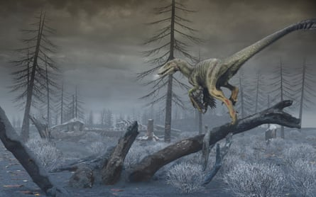
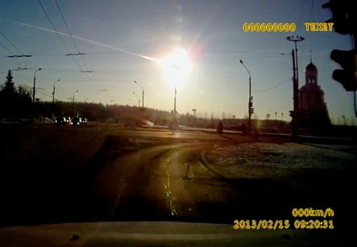
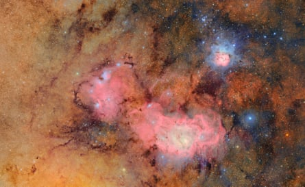
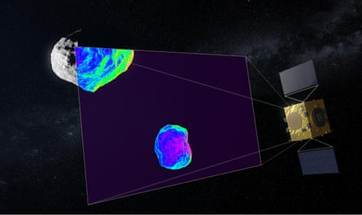

I t is a scenario beloved of Hollywood: a huge asteroid, several miles wide, is on a collision course with Earth. Scientists check and recheck their calculations but there is no mistake – civilisation is facing a cataclysmic end unless the space rock can be deflected.
It may sound like science fiction, but it is a threat that is being taken seriously by scientists.
Earlier this year, researchers estimated that asteroid YR4 2024 had a 3.1% chance of hitting Earth in 2032, before revising that likelihood down to 0.0017% . This week, new data suggested it was more likely to hit the moon , with a probability of 4.3%.
If that happens, the 53- to 67-metre (174ft-220ft) asteroid previously called a “city killer” will launch hundreds of tonnes of debris towards our planet, posing a risk to satellites, spacecraft and astronauts.
Possible impact of asteroid 2024 YR4 on the moon in December 2032.
Before that, in April 2029, 99942 Apophis – an asteroid larger than the Eiffel Tower – will be visible to the naked eye when it passes within 32,000km of Earth. This attention-grabbing close encounter has prompted the UN to designate 2029 as the international year of planetary defence.
When it comes to apocalyptic asteroid strikes, there is precedent, of course. Most scientists believe such an event hastened the demise of non-avian dinosaurs 66m years ago.
“This is something that happens,” said Colin Snodgrass, a professor of planetary astronomy at the University of Edinburgh. “Not very often, but it is something that happens. And it’s something that we could potentially do something about.”
Knowing the risk
As Chris Lintott, a professor of astrophysics at the University of Oxford, told the UK parliament’s science, innovation and technology committee this week, the risk posed by an asteroid originating beyond our solar system is minimal. Instead, he said, the greater threat comes from those in our cosmic back yard.
An asteroid is thought to have caused the harsh conditions that led most dinosaurs to go extinct.Illustration: Dr Mark A Garlick/Reuters
“Most asteroids in the solar system exist in the asteroid belt, which is between Mars and Jupiter, but they become disrupted, usually by encounters with either of those planets, and they can move into orbits that cross the Earth,” said Lintott, who presents the long-running BBC astronomy series The Sky at Night. “Then it’s just a case of whether we’re in the wrong place at the wrong time.”
The chances of an enormous asteroid – the type that did for the dinosaurs – hitting Earth is admittedly low. “We think there’s one of these every 10m to 100m years, probably,” Lintott told the Guardian. “So I think you’d be right to ignore that when you decide whether to get up on a Thursday morning or not.”
Snodgrass said there were “precisely four” asteroids big enough and close enough to Earth to be considered “dino-killers”, and added: “We know where they are, and they’re not coming anywhere near us.”
But damage can also be done by smaller asteroids. According to Nasa, space rocks measuring about one to 20 metres across collided with Earth’s atmosphere resulting in fireballs 556 times over 20 years .
A dashboard camera catches a meteor exploding over Chelyabinsk, Russia, in 2013.Photograph: AP
Many collisions have occurred over the oceans , but not all. “Chelyabinsk is the best example,” Lintott said. In 2013, a house-sized space rock – thought to have been about 20 metres across – exploded in the air above the Russian city with a force of nearly 30 Hiroshima bombs , producing an airburst that caused significant damage and hundreds of injuries, mostly from broken glass.
Less dramatically, in February 2021 a space rock thought to have been just tens of centimetres across broke up in Earth’s atmosphere, with fragments landing in the Cotswold town of Winchcombe in the UK. Thankfully, the damage was confined to a splat mark on a driveway .
The types of asteroids we should perhaps be most concerned about are those about 140 metres across. According to Nasa, asteroids around that size are thought to hit Earth about once every 20,000 years and have the potential to cause huge destruction and mass casualties. The space agency has a congressional mandate to detect and track near-Earth objects of this size and larger, and a suite of new technological advances are helping them do just that.
Gathering data
On Monday, the first images from the Vera C Rubin observatory in Chile were released to the public. This telescope is expected to more than triple the number of known near-earth objects, from about 37,000 to 127,000, over a 10-year period. In just 10 hours of observations, it found seven previously unspotted asteroids that will pass close to the Earth – though none are expected to hit.
The Trifid and Lagoon nebulas as seen by the Vera C Rubin observatory in Chile.Photograph: RubinObs/Reuters
Also in the offing, though not planned for launch before 2027, is Nasa’s near-Earth object (Neo) surveyor. Armed with an array of infrared detectors, this is “the first space telescope specifically designed to detect asteroids and comets that may be potential hazards to Earth”, the agency says.
Lintott said: “Between those two, we should find everything down to about 140 metres.” He said such observations should give scientists up to 10 years’ warning of a potential collision.
The European Space Agency (Esa) is planning a near-Earth object mission in the infrared (Neomir) satellite. Slated for launch in the early 2030s, this will help detect asteroids heading towards Earth that are at least 20 metres in diameter and obscured by the sun.
Assessing the emerging capabilities, Edward Baker, the planetary defence lead at the UK’s National Space Operations Centre (NSpOC) at RAF High Wycombe, said: “I think we’re in a good place. I can’t see a situation like [the film] Don’t Look Up materialising at all – though I wouldn’t mind being portrayed by Leonardo DiCaprio.”
Leonardo DiCaprio as an astronomy professor in the 2021 disaster satire Don’t Look Up.Photograph: Niko Tavernise/AP
As our ability to spot near-Earth asteroids increases, Lintott said, we should get used to hearing about asteroids like YR4 2024, which initially seem more likely to hit Earth before the risk rapidly falls towards zero. He described the shifting probabilities as similar to when a footballer takes a free kick.
“The moment they kick it, [it looks like] it could go anywhere,” he said. “And then as it moves, you get more information. So you’re like: ‘Oh, it might go in the goal,’ and then it inevitably becomes really clear that it’s going to miss.”
Taking action
Of course, scientists aren’t just monitoring the risks to Earth. They are also making plans to protect it. In 2022, Nasa crashed a spacecraft into a small, harmless asteroid called Dimorphos that orbits a larger rock called Didymos to test whether it would be possible to shift its path. The Dart mission was a success , reducing Dimorphos’s 12-hour orbit around Didymos by 32 minutes.
In 2024, Esa launched a follow-up to Nasa’s Dart mission , called Hera. This will reach Dimorphos in 2026 and carry out a close-up “crash site investigation”. It will survey the Dart impact crater, probe how effectively momentum was transferred in the collision and record a host of other measurements.
Esa hopes this will provide crucial insights that can be used to make deliberate Dart-style impacts a reliable technique for safeguarding Earth.
Esa’s Hera spacecraft will survey the Dimorphos and Didymos asteroids in 2026.Illustration: ESA/ScienceOffice.org
“Dart was much more effective than anyone expected it to be,” Lintott said. “And presumably that’s something to do with the structure of the asteroid. I think we need to know whether Dart just got lucky with its target, or whether all near-Earth asteroids are like this.”
For the most part, scientists say the threat of an asteroid strike does not keep them up at night. “We’re safer than we’ve ever been and we’re about to get a lot safer, because the more of these things we find, the more we can spot them on the way in,” Lintott said.
As Esa has quipped on its merchandise: “Dinosaurs didn’t have a space agency.”